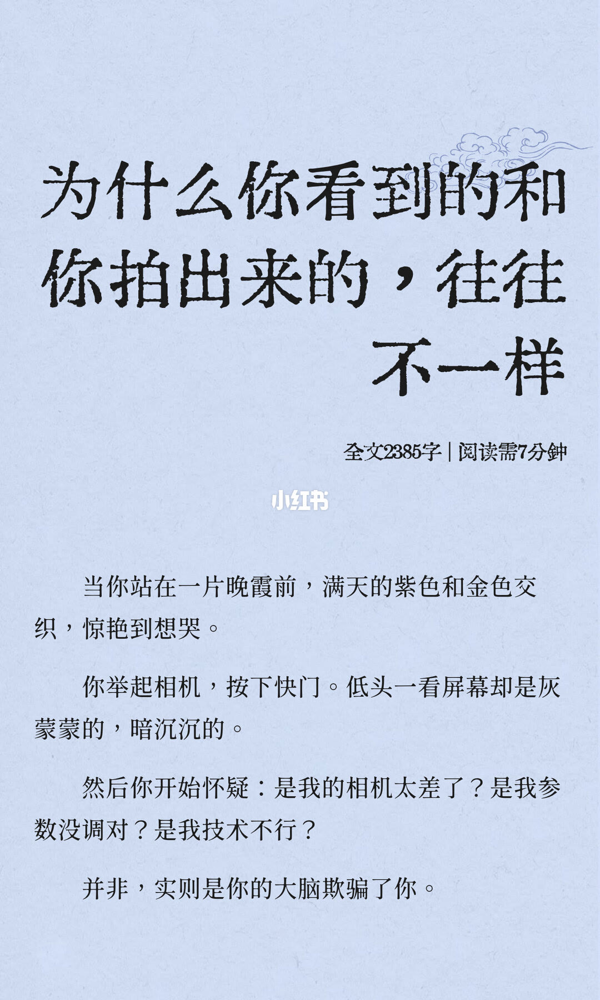
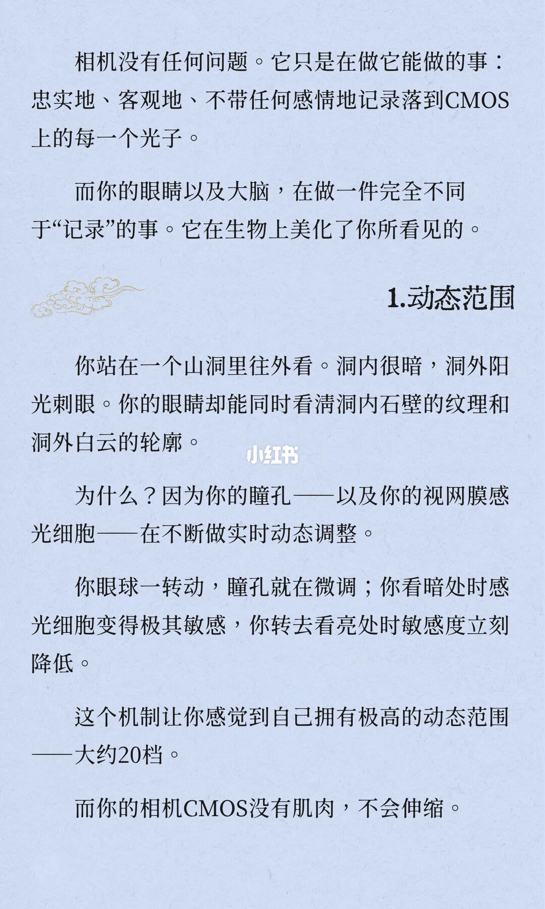
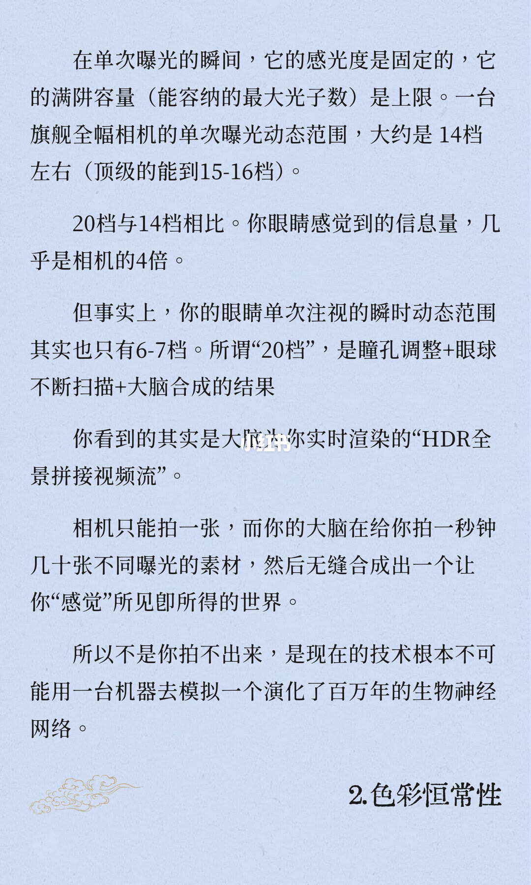
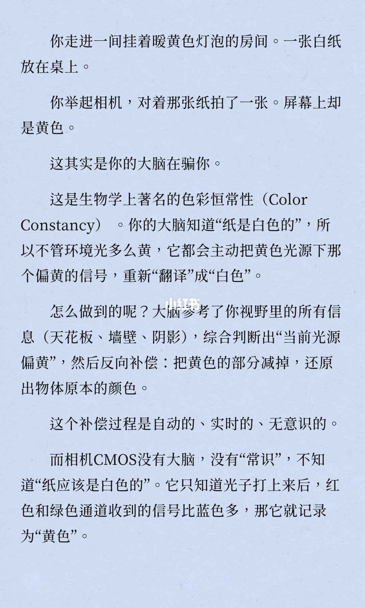
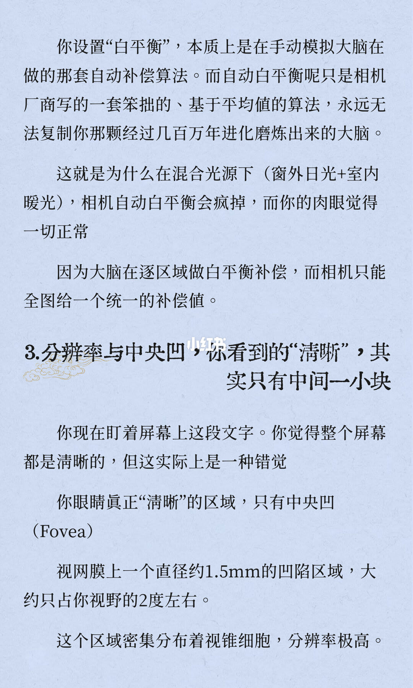
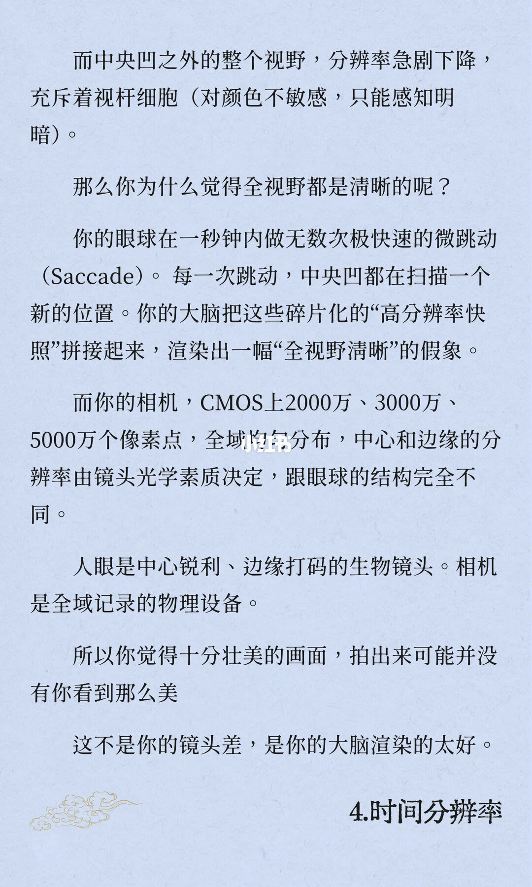
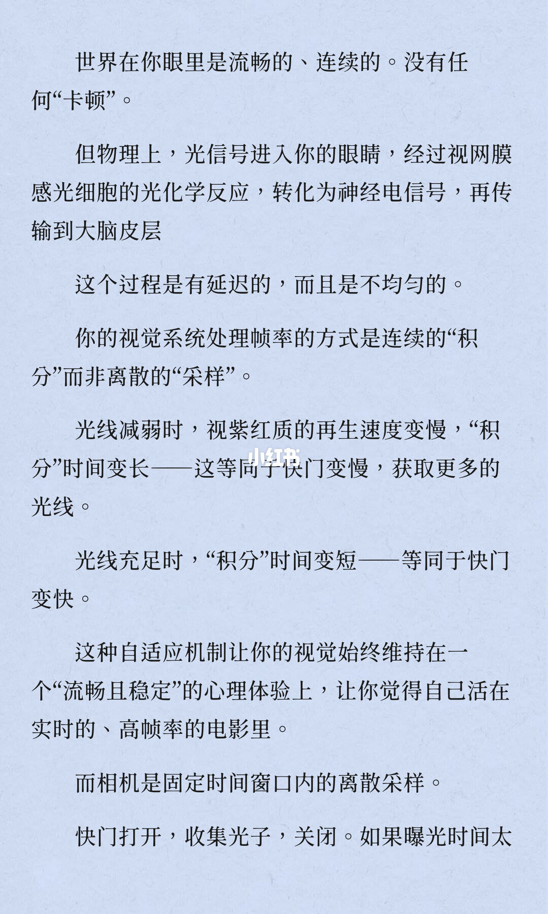
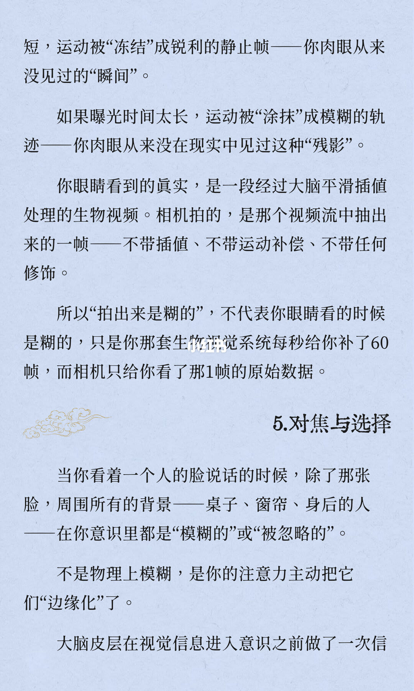
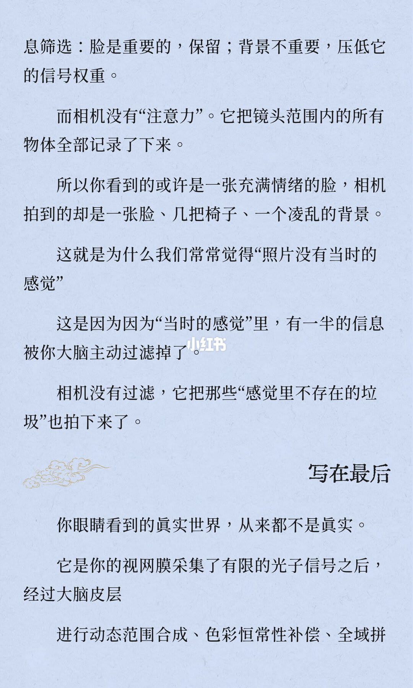
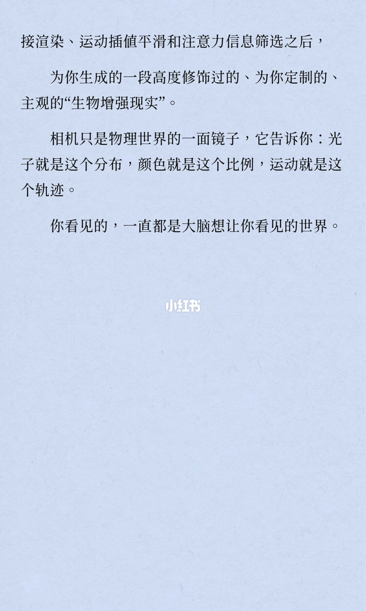

图文实录 · 小红书 · 徐贰懂
聊聊人眼与相机 为什么拍的没有眼睛看震撼
拍出来不如眼前震撼，笔记把原因收在大脑，而不是机身。眼睛一边调瞳孔、一边扫描、再做色彩补偿和注意力筛选，合成一段主观画面；相机单次曝光只记录落到 CMOS 上的光子。封面用晚霞发灰举了这个落差，后五节分别写动态范围、色彩恒常性、中央凹、时间分辨率、对焦与选择。
1/10
封面：看到的和拍出来的往往不一样

大字三行：「为什么你看到的和」「你拍出来的，往往」「不一样」。标题下是「全文2385字 | 阅读需7分钟」。
正文：站在一片晚霞前，满天的紫色和金色交织，惊艳到想哭。举起相机，按下快门，低头一看屏幕却是灰蒙蒙的，暗沉沉的。然后怀疑三件事：是我的相机太差了？是我参数没调对？是我技术不行？收束句是：「并非，实则是你的大脑欺骗了你。」这一页没有光圈、视场角或动态范围数字。
2/10
相机记光子，眼睛在做生物美化

开篇：相机没有任何问题。它只是在做它能做的事：忠实地、客观地、不带任何感情地记录落到 CMOS 上的每一个光子。眼睛以及大脑在做一件完全不同于「记录」的事，它在生物上美化了你所看见的。
小节标题「1.动态范围」。例子是站在山洞里往外看：洞内很暗，洞外阳光刺眼，眼睛却能同时看清洞内石壁的纹理和洞外白云的轮廓。原因写成瞳孔以及视网膜感光细胞在不断做实时动态调整。眼球一转动，瞳孔就在微调；看暗处时感光细胞变得极其敏感，转去看亮处时敏感度立刻降低。图上把这种感觉写成：「这个机制让你感觉到自己拥有极高的动态范围——大约20档。」页末：「而你的相机CMOS没有肌肉，不会伸缩。」20 档是这一页印出来的唯一档位，没有相机档数。
3/10
单次曝光有上限，20 档是合成出来的

单次曝光的瞬间，感光度是固定的，满阱容量（能容纳的最大光子数）是上限。图上写：「一台旗舰全幅相机的单次曝光动态范围，大约是14档左右（顶级的能到15-16档）。」下一句把上一页的感觉和这一档并置：「20档与14档相比。你眼睛感觉到的信息量，几乎是相机的4倍。」
紧接着自己改口：眼睛单次注视的瞬时动态范围其实也只有 6-7 档。所谓「20档」，是瞳孔调整＋眼球不断扫描＋大脑合成的结果。你看到的其实是大脑为你实时渲染的「HDR全景拼接视频流」。相机只能拍一张，大脑在给你拍一秒钟几十张不同曝光的素材，然后无缝合成出一个让你「感觉」所见即所得的世界。
所以不是你拍不出来，是现在的技术根本不可能用一台机器去模拟一个演化了百万年的生物神经网络。页末标题是「2.色彩恒常性」。这一页没有机型名。「几十张」没有写成具体帧数。「4倍」是图上的原句，没有再换成别的倍数。
4/10
暖黄灯下的白纸：色彩恒常性

走进一间挂着暖黄色灯泡的房间，一张白纸放在桌上。举起相机对着那张纸拍了一张，屏幕上却是黄色。图上说：这其实是你的大脑在骗你。
名称写成「色彩恒常性（Color Constancy）」。大脑知道「纸是白色的」，所以不管环境光多么黄，都会主动把黄色光源下那个偏黄的信号，重新「翻译」成「白色」。做法是参考视野里的所有信息（天花板、墙壁、阴影），综合判断出「当前光源偏黄」，然后反向补偿：把黄色的部分减掉，还原出物体原本的颜色。这个补偿过程是自动的、实时的、无意识的。
相机 CMOS 没有大脑，没有「常识」，不知道「纸应该是白色的」。它只知道光子打上来后，红色和绿色通道收到的信号比蓝色多，那它就记录为「黄色」。图上没有开尔文，也没有白平衡菜单。
5/10
白平衡是全图一个值，清晰只在中央凹

你设置「白平衡」，本质上是在手动模拟大脑在做的那套自动补偿算法。自动白平衡只是相机厂商写的一套笨拙的、基于平均值的算法，永远无法复制你那颗经过几百万年进化磨炼出来的大脑。混合光源写成「窗外日光＋室内暖光」：相机自动白平衡会疯掉，肉眼觉得一切正常。原因是大脑在逐区域做白平衡补偿，相机只能全图给一个统一的补偿值。
小节标题：「3.分辨率与中央凹，你看到的“清晰”，其实只有中间一小块」。盯着屏幕上这段文字，觉得整个屏幕都是清晰的，但这实际上是一种错觉。眼睛真正「清晰」的区域，只有中央凹（Fovea）。图上印的尺寸是：视网膜上一个直径约 1.5mm 的凹陷区域，大约只占你视野的 2 度左右。这个区域密集分布着视锥细胞，分辨率极高。全视野的角度没有印出来。
6/10
边缘打码，相机是全域均匀的像素

中央凹之外的整个视野，分辨率急剧下降，充斥着视杆细胞（对颜色不敏感，只能感知明暗）。那么你为什么觉得全视野都是清晰的呢？眼球在一秒钟内做无数次极快速的微跳动（Saccade）。每一次跳动，中央凹都在扫描一个新的位置。大脑把这些碎片化的「高分辨率快照」拼接起来，渲染出一幅「全视野清晰」的假象。「无数次」没有写成具体次数。
相机这边，图上写 CMOS 上 2000 万、3000 万、5000 万个像素点，全域均匀分布，中心和边缘的分辨率由镜头光学素质决定，跟眼球的结构完全不同。对照句：「人眼是中心锐利、边缘打码的生物镜头。相机是全域记录的物理设备。」所以你觉得十分壮美的画面，拍出来可能并没有你看到那么美。这不是你的镜头差，是你的大脑渲染的太好。页末标题「4.时间分辨率」。三个像素数是举例，没有对应到某一台机身。
7/10
眼睛在积分，相机在固定窗口里采样

世界在你眼里是流畅的、连续的，没有任何「卡顿」。物理上，光信号进入眼睛，经过视网膜感光细胞的光化学反应，转化为神经电信号，再传输到大脑皮层。这个过程是有延迟的，而且是不均匀的。
视觉系统处理帧率的方式是连续的「积分」而非离散的「采样」。光线减弱时，视紫红质的再生速度变慢，「积分」时间变长——这等同于快门变慢，获取更多的光线。光线充足时，「积分」时间变短——等同于快门变快。这种自适应机制让视觉始终维持在一个「流畅且稳定」的心理体验上，让你觉得自己活在实时的、高帧率的电影里。
相机是固定时间窗口内的离散采样。快门打开，收集光子，关闭。页末句子断在：「如果曝光时间太」。这一页没有帧率数字，也没有快门秒数。
8/10
冻结和残影都不是肉眼那一段视频

页首接上一页：短，运动被「冻结」成锐利的静止帧——你肉眼从来没见过的「瞬间」。如果曝光时间太长，运动被「涂抹」成模糊的轨迹——你肉眼从来没在现实中见过这种「残影」。
你眼睛看到的真实，是一段经过大脑平滑插值处理的生物视频。相机拍的，是那个视频流中抽出来的一帧——不带插值、不带运动补偿、不带任何修饰。所以「拍出来是糊的」，不代表你眼睛看的时候是糊的，只是你那套生物视觉系统每秒给你补了 60 帧，而相机只给你看了那 1 帧的原始数据。60 帧和 1 帧是这一页印出来的帧数。
小节「5.对焦与选择」。看着一个人的脸说话的时候，除了那张脸，周围所有的背景——桌子、窗帘、身后的人——在你意识里都是「模糊的」或「被忽略的」。不是物理上模糊，是你的注意力主动把它们「边缘化」了。页末断在：「大脑皮层在视觉信息进入意识之前做了一次信」。
9/10
相机没有注意力，把背景也记下来

页首接成「信息筛选」：脸是重要的，保留；背景不重要，压低它的信号权重。相机没有「注意力」。它把镜头范围内的所有物体全部记录了下来。所以你看到的或许是一张充满情绪的脸，相机拍到的却是一张脸、几把椅子、一个凌乱的背景。
这就是为什么我们常常觉得「照片没有当时的感觉」。下一句图上连用了两个「因为」：「这是因为因为“当时的感觉”里，有一半的信息被你大脑主动过滤掉了。」相机没有过滤，它把那些「感觉里不存在的垃圾」也拍下来了。「一半」是这句里的比例，没有另给测量。
小标题「写在最后」。你眼睛看到的真实世界，从来都不是真实。它是你的视网膜采集了有限的光子信号之后，经过大脑皮层，进行动态范围合成、色彩恒常性补偿、全域拼。最后三字「全域拼」在页底被截断。
10/10
收在生物增强现实

页首接上一页：「接渲染、运动插值平滑和注意力信息筛选之后，为你生成的一段高度修饰过的、为你定制的、主观的“生物增强现实”」。
相机只是物理世界的一面镜子，它告诉你：光子就是这个分布，颜色就是这个比例，运动就是这个轨迹。末句：「你看见的，一直都是大脑想让你看见的世界。」这一页没有视场角，也没有新的动态范围。
收尾
震撼差在合成，不在单次曝光
结论
屏幕上的晚霞发灰、白纸发黄、壮美画面变平、人像少了当时的感觉，笔记都收成同一件事：眼睛交付的是瞳孔调整、扫描、色彩补偿、运动插值和注意力筛选之后的主观画面，相机交付的是一次曝光里落到 CMOS 上的光子。感觉里的大约 20 档，被笔记自己改写成单次注视只有 6-7 档；旗舰全幅单次大约 14 档，顶级写到 15-16 档。
支撑页
提问在 1/10。大约 20 档和山洞例子在 2/10。14 档、15-16 档、6-7 档、4 倍和「一秒钟几十张」在 3/10。白纸与色彩恒常性在 4/10。混合光、全图一个白平衡值、中央凹约 1.5mm 与约 2 度在 5/10。视杆、扫视、2000 万／3000 万／5000 万像素在 6/10。积分与采样在 7/10。冻结、残影、60 帧对 1 帧在 8/10。注意力和「一半」在 9/10。生物增强现实在 10/10，并接上 9/10 被截断的「全域拼」。
边界
视场角只印了中央凹大约 2 度，没有全视野角度。动态范围只印了大约 20 档、大约 14 档、顶级 15-16 档、瞬时 6-7 档，没有机型。「4倍」是 3/10 的原句，不要再换算成别的倍数。「几十张」不是帧率；60 帧只出现在 8/10 的运动插值。「无数次」微跳动没有次数。2000 万、3000 万、5000 万没有对应具体相机。9/10 的「一半」没有测量，该页还印了重复的「因为」。7/10 与 8/10、8/10 与 9/10、9/10 与 10/10 都是句子跨页，不能把页末半句当成完整结论。图上没有开尔文、快门秒数或包围曝光步骤。